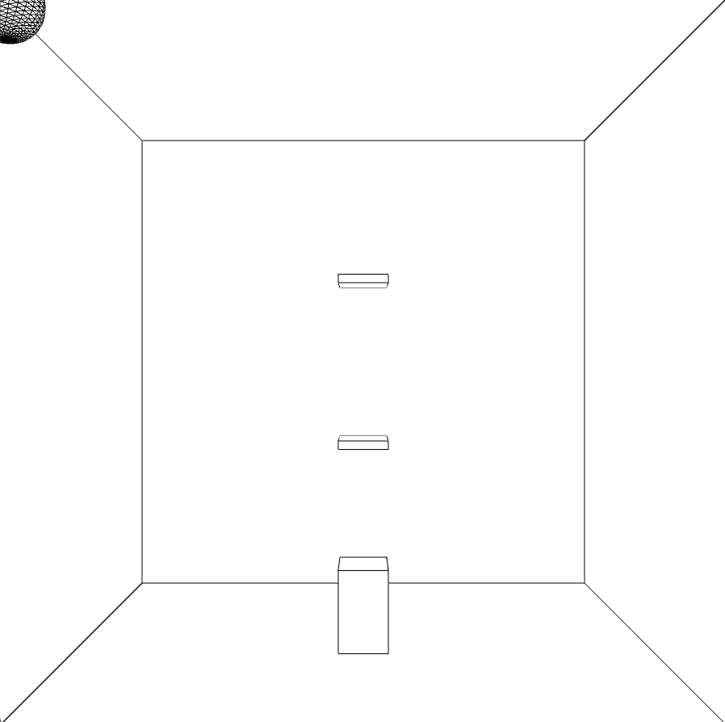

Background + How Vision Changed
At first I wanted to create a game that involved juice, lemon, and a cup so that the user can control the lemon with the controller and roll it in to the squeezer and fill the cup with juice.
So I began with a diagram. I was inspired to do this project because my hobby cooking and I wanted to do a project relating to something to do with the kitchen.
The way of depicting that was a challenging process. At first I thought about doing things using P3D. I thought that it would be cool to image the ball moving around
a 3D space. I started off by trying to create a bouncing sphere (the lemon) inside a 3D space and I started to learn how to think in a 3D space.
However, it was very hard to calculate the rotations of the sphere. So I had to pivot in to a new direction.
Sensors: An Accelerometer with gyroscope and a Pressure Sensor
The Process of Coding / Connecting Sensors
1. Created a set of code to create the elements in processing and replaced all the
interactions with keyPressed() so that I can add the interactions later on when
I put together my board.

2. Designed the board on the particle.io
in order to see how I wanted to place my controllers
on the breadboard. Then write code on Arduino to connect
the sensors.

3. Connect the board on to Arduino

4. Design the controller further
This was a bit challenging because of the way the sensors
are shaped. I had to make it so that the the user is able to
turn the sensors over and also think about how the users might want to prress
on the pressure sensor. I first came up with an idea where the user would
use the controller like the old Nintendo Wii. However, I wanted it to be
more interactive and fun to use so I took some magnets, a dome shaped plastic,
and allowed the user to move the sensor around the dome. Then put carboard
around the breadboard and cut out the part where cords and pressure sensor was
coming out. I also thought that it would be easier for people to put pressure
on it on top of the cardboard instead of having to push it down all the way to
the breadboard.

Challenges/ Failures
The first codes consisted of trying to work with 3D. On the reference site,
it told me to add P3D to size but I ended up getting errors on the code.
I tried to fix the problem by searching the error codes but I couldn't figure it out.
But it turned out that I had to include frameRate() in order for it to start up.
In addition, trying to make the ball rotate with 3D was not an easy concept to grasp.
So I had to pivot in the middle of the project to depict it in a more feasible way.
There were also moments where I couldn't find the right port on the computer,
so I had challenges and spent longer time trying to simply connecting the sensors.

Future Improvements
There were some errors in the code and so I would like to be able to make the pressure sensor also react in processing.
I would also like to think of more ways to make the controller so that it can be hand held.